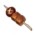
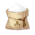
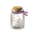

Tevyat Fried Egg
Tevyat Fried Egg Fisherman's Toast
Fisherman's Toast-  Chicken-Mushroom Skewer
-  Flour
- Cream
- Smoked Fowl
- Butter
 Ham
Ham-  Sugar
- Crab Roe
- Jam
- Cheese
 Bacon
Bacon Sausage
Sausage
- Tea Break Pancake
- Mint Jelly
- Flaming Red Bolognese
- Cream Stew
- Calla Lily Seafood Soup
- Crispy Potato Shrimp Platter
- Sautéed Matsutake
- "Pile 'Em Up"